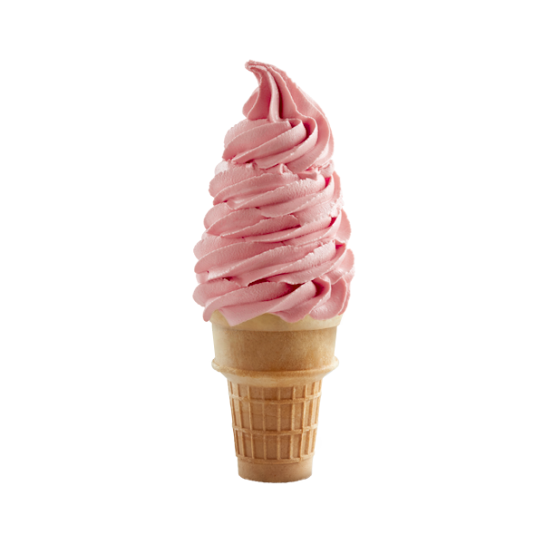

¿Qué es el Helado?
-
El helado es un producto delicioso y nutritivo que se puede definir como leche batida, congelada, endulzada y concentrada, consumible en diferentes sabores, formas y tamaños.
La preparación de los helados por aquel entonces era tan complicada que sólo lo podía tomar la nobleza. Todos sabemos a qué velocidad se derrite un helado y al no disponer de frigoríficos, congeladores o heladeras, era toda una aventura conservar un helado hasta que un rey o rico mercader lo pudiera saborear.
Para hacer un helado y conservarlo se necesita frío, así que pagaban a portadores para subir a las montañas a coger nieve, y una vez en casa la depositaban en profundos pozos tapándola con paja. Con esta nieve podían enfriar bebidas o mezclarla con zumos para hacer sorbetes.
Los helados de leche entonces no se conocían, pero un cocinero francés que servía en la corte inglesa, mezcló zumos con leche e inventó el helado.
Nuestro Producto
-
En Cooperativa Hercast lo tenemos claro, queremos ser parte del fin de una era de alimentos
excesivamente industrializados, así que nos hemos propuesto contribuir a potenciar el
re-descubrimiento de lo natural y lo bueno en los postres.
Trabajamos día a día para mantener el placer de tomar helado creando alternativas más naturales,
más centradas en lo bueno de los alimentos y mirando más por la calidad, en lugar de por abaratar costes.
Y sobre todo, sin usar ingredientes de origen animal.
Lo conseguimos combinando lo mejor de la artesanía y la industria a través de una cuidada selección de ingredientes
donde prevalece la calidad y el sabor, y que concluye con procesos de producción estandarizados
que garantizan un producto cremoso.
El resultado es un helado impecable en calidad, textura y sabor (tendrás que probarlo para confirmarlo).
Algunos de Nuestros Productos:


